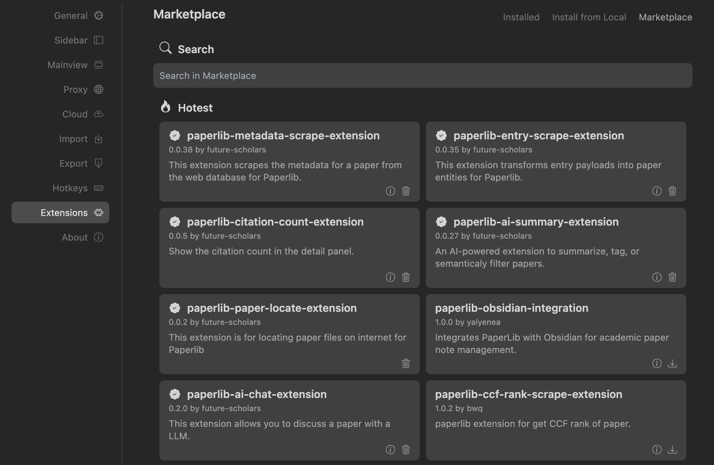
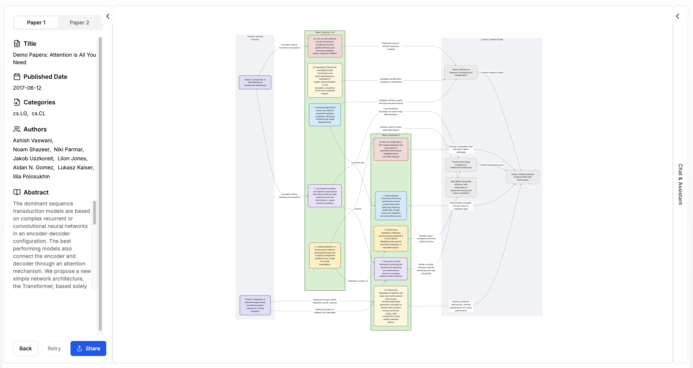
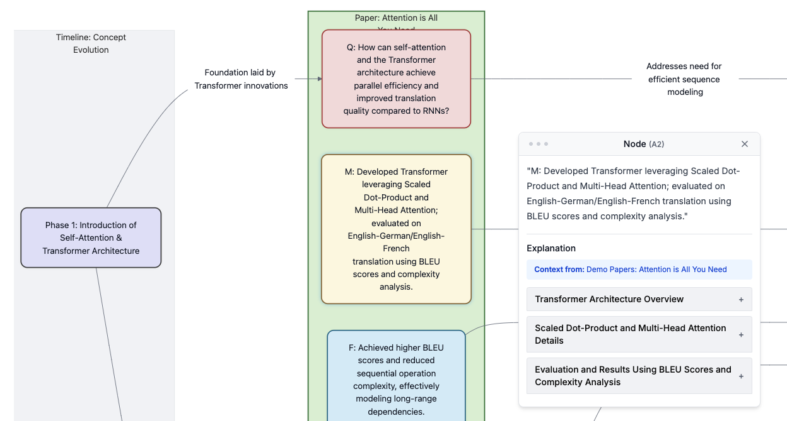
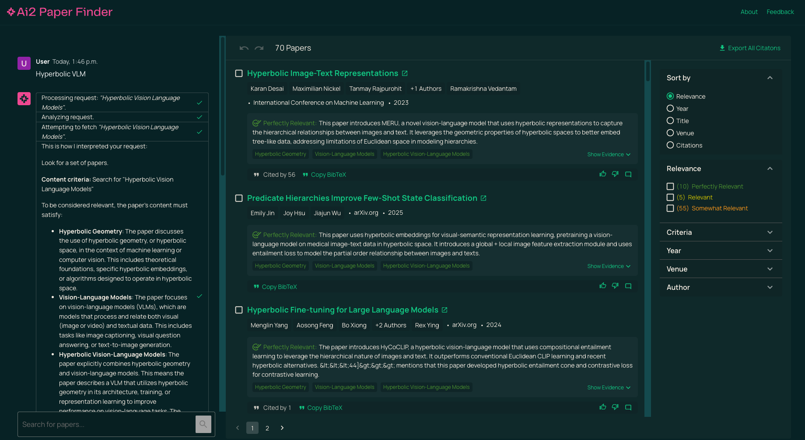
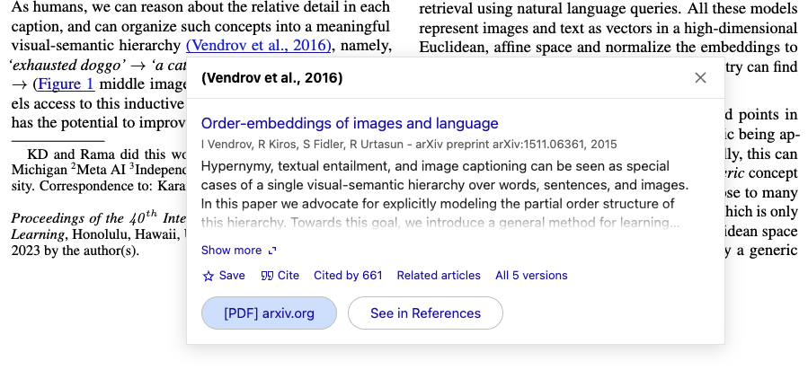

Tools I use for (AI) research
This is not a typical SEO-optimized blog post that you’d find that suggest using obvious tools like Google Scholar, ResearchGate, EndNote, Zotero, etc. (Though those are great too!) All of these tools listed here tools that I actually use, and are free.
PaperLib
If you have ever written research papers and have to cite sources, one of the biggest problems you might encounter is that you have to manually search for the right citation. Google Scholar is sometimes provide the citation for the pre-print version of the paper, not the published version (with actual conference and journals). For example, if you search for the paper “Lxmert: Learning cross-modality encoder representations from transformers” on Google Scholar, you will get the following BibTeX entry:
@article{tan2019lxmert,
title={Lxmert: Learning cross-modality encoder representations from transformers},
author={Tan, Hao and Bansal, Mohit},
journal={arXiv preprint arXiv:1908.07490},
year={2019}
}whereas what I want is the version of the paper that is published in EMNLP 2019. PaperLib’s fuzzily scrape feature allows me do this. Here’s the citation for the published version:
@inproceedings{tan2019lxmert,
author = {Tan, Hao Hao and Bansal, Mohit},
booktitle = {EMNLP},
year = {2019},
pages = {5099--5110},
organization = {},
title = {LXMERT: Learning {Cross}-{Modality} {Encoder} {Representations} from {Transformers}},
volume = {},
}Notice how it subtlely but every word in the brackers {}. This is to ensure that the citation is properly capitalized when you used the BibTex entry in your LaTeX document.
The second feature that I love about PaperLib is that it has an extension that allows me to directly import the paper. When I was reading a paper on my browser, I can just right click and import the paper into PaperLib (with the proper tag if you like). There are also other extensions built for PaperLib that you could explore by yourself.

Another feature I find useful is you can abbreviate the publication venue. In machine learning, top-tier conferences like Advances in Neural Information Processing Systems (NeurIPS) and International Conference on Learning Representations (ICLR) are abbreviated as NeurIPS and ICLR respectively. Sometime these can be inconsistent, like “Advances in Neural Information Processing Systems” vs. “Conference on Neural Information Processing Systems”. PaperLib allows you to abbreviate the venue name so that the BibTeX entry is more consistent. Here’s the list that I use:
Conference on Computer Vision and Pattern Recognition -> CVPR
International Conference on Computer Vision -> ICCV
European Conference on Computer Vision -> ECCV
Conference on Neural Information Processing Systems -> NeurIPS
International Conference on Machine Learning -> ICML
International Conference on Learning Representations -> ICLR
AAAI Conference on Artificial Intelligence -> AAAI
International Joint Conference on Artificial Intelligence -> IJCAI
Annual Meeting of the Association for Computational Linguistics -> ACL
Conference on Empirical Methods in Natural Language Processing -> EMNLP
North American Chapter of the ACL -> NAACL
You can add yours in PaperLib -> Settings -> Export -> Publication Abbreviation.
The best of all ? PaperLib is free!
Paper Visualizer
If you have ever drown into research paper with too many details (of architecture, training, etc.) and want to get a quick overview, Paper Visualizer is the tool for you. It helps create a big picture using diagrams. I started using it for roughly two weeks and still exploring the other available features, but it’s already a game changer for me.
Here’s a diagram that Paper Visualizer creates for the “Attention is All You Need” paper:

This is really useful because it creates immediate hypothesis, how the authors tested it, and what the results are, etc.
Zooming in, you get an AI features for each node to further explain the concepts:

And you can also embed it into your website to easily share it with others, like I did below for the MERU paper:
The best part ? Paper Visualizer is free (for now)!
Ai2PaperFinder
Just as the name suggest, this tool, developed by Ai2, is an AI-powered tool that allows you to find the right paper for your research. It’s a great tool for getting a quick overview of the paper, and it’s free! Just enter the keyword and it will give you a list of papers that are related to your query (with different levels of Relevance).

Google Scholar PDF Reader
Google Scholar PDF Reader is an extension for reading PDF right on your browser. The selling-point of this from other PDF viewer is that it allows me to preview the citation without having to scroll all the way to the bottom of the page and then re-scroll back to where I was.

It does come with an AI-generated outline, but I don’t use it much.